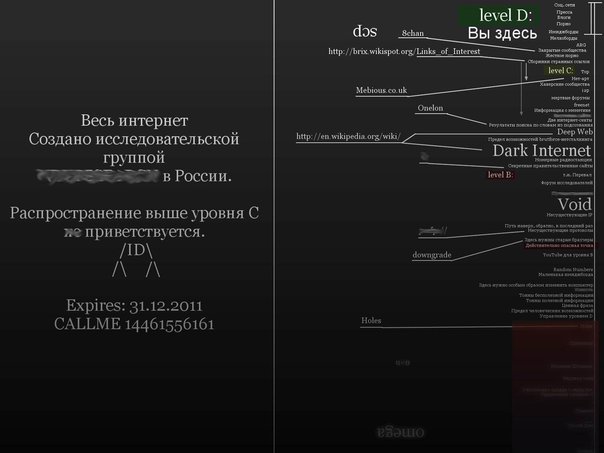
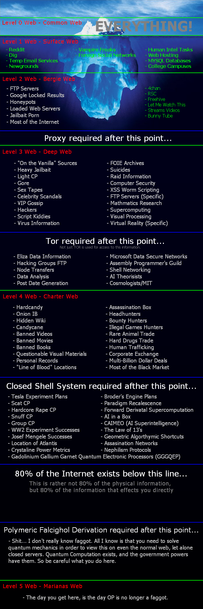
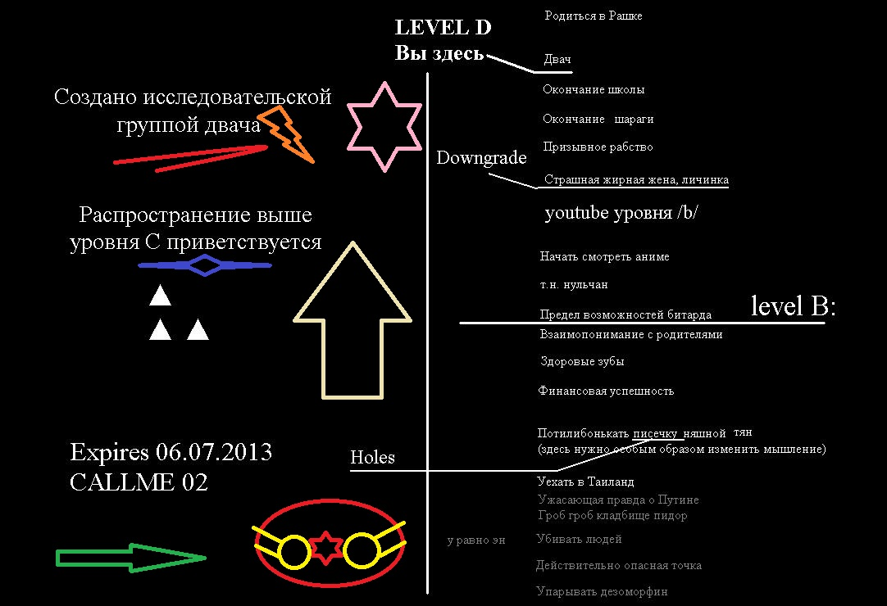

Deeb Web
ПастаВ последнее время стал часто натыкаться на АИБах на разговоры о "нетсталкинге" или о том, как некоторые энтузиасты/шизофреники/школьники (нужное подчеркнуть) пытаются прорваться в Глубокую Сеть. Что это такое - новомодное движение "нетсталкеров", вроде тех же пресловутых "хакеров сновидений", кучка шизофреников или некая разновидность любопытства, присущего человеку? Всегда интересно заглянуть под таинственные покровы мира. Даже если это виртуальный мир.
Термином "Deep Web" так же, называют не индексируемые поисковиками страницы Сети и те, которые доступны только зарегистрированным юзерам того или иного сайта. Впрочем, специально для решения этой проблемы Yahoo запустил search.yahoo.com - поисковую систему, призванную откапывать нужную информацию De Profundis, так сказать. Нельзя не упомянуть про книгу К.Шермана и Г.Прайса «Невидимый интернет» и про целую кучу специальных сервисов, направленных именно на работу в глубоком вебе. Впрочем, мотивы, подстёгивающие интерес специалистов к невидимой поисковиками части Интернета обусловлен сугубо утилитарными причинами. Зачастую нужная информация находится именно в теневой части Сети, либо речь идёт о SEO оптимизации контента. Что касается Dark Net, то здесь мы имеем либо новенькую альтернативу Tor и Freenet, либо страницы, которые вообще не подключены к Интернету, хотя и являются частью Сети. Именно такие вот потайные закоулки Сети и манят к себе разного рода исследователей. Кто-то ударяется в мистику, кто-то одержим идеей мирового заговора, кто-то просто любопытствует или ищет способы самоутверждения.
Что я знаю о нетсталкинге? То, что это тот же сталкинг, только распространяется не на реальный мир, а на компьютерные сети (чаще всего - Интернет). Нетсталкеры делят Сеть на несколько уровней. Ниже приведена приблизительная схема уровней Сети. Список уровней дан в порядке их "углубления" в Сеть.
Level D
- Социальные сети
- Блоги
- Порно
- Имиджборды
- Мелкоборды
- ARG
- Закрытые сообщества
- Жёсткое порно
- Сборники странных ссылок
Level C
- Тор
- Нет-арт
- Хакерские сообщества
- i2p
- Мёртвые форумы
- Freenet
- Информация о меметике
- Будущие сайты
- Две интернет-секты
- Результаты поиска по словам из подсознания
- Deep Web
- Предел возможностей brutforce-нетсталкинга
- Dark Internet
- Номерные радиостанции
- Секретные правительственные радиостанции
Level B
- Так называемый "Перевал"
- Форумы исследователей
- Пустые страницы
- Несуществующие IP
- Void
- Несуществующие страницы
- Путь наверх, обратно, в последний раз
- Несуществующие протоколы
- Здесь нужны старые браузеры
- Действительно опасная точка
- You Tube для уровня B
- Случайные числа
- Маленькая имиджборда
- Тонны бесполезной информации
- Тонны полезной информации
- Ценная фраза
- Предел человеческих возможностей
- Управление уровнем D
- Holes
- Смерть
- Резонанс Шумана
- Мёртвая зона
- Ужасающая правда о зеркалах
- Управление уровнем C
- Тихий дом
Level A...
(Это, по большей части, инсайдерская информация и я рискую навлечь на себя гнев Анонимуса, публикуя здесь карту Сети.)
Да, по большей части всё это напоминает страшилки про smile.dog или про Вайомингский инцидент и криппи-пасты про мистику Интернета. Скорее всего, так оно и есть, и всё это - просто шутка или причудливая форма Интернет-фольклора. Однако, меня интересует не то, что ищут эти нетсталкеры, а почему ищут. Что побуждает человека верить в околонаучные басни про Резонанс Шумана, пульсирующий с той же частотой, что и нервные импульсы? Частенько я вижу очень странный сон. И в этом сне я брожу по лабиринту, пытаясь найти выход оттуда. Иногда я осознаю, что сплю, но вот же чертовщина: в этих снах мне кажется, что я не смогу проснуться до тех пор, пока не найду нужный выход. И это ещё не самое странное. Проснувшись, я не всегда уверен в том, что я этот нужный выход нашёл, понимаете? Иногда преследует такое шизофреническое ощущение, что я всё ещё там. Понимаю, мне бы к психиатру надо. В тех снах ещё есть какое-то ощущение чьего-то присутствия. Словно я там не один и что-то постоянно идёт за мной по пятам. Я не верю в басни про Астрал и в прочую мистическую фигню. Но само это ощущение...
Мне кажется, что Интернет, как динамичное и развивающееся явление, уже со времён своего возникновения перестал быть простой суммой постов и файлов, загружаемых пользователями ежесекундно. Это безбрежный океан информации, в котором неизбежно должна зародиться своя форма жизни, отличная от той, что стала её причиной. Точно так же, как целое не есть сумма своих частей, Интернет - это не простая совокупность информации. Это не просто поток битов и байтов.
Взять, к примеру, Лурк. Этот сайт - продукт деятельности Анонимуса и практически каждая статья там - это результат совместного написания несколькими Анонами. Тематика каждой статьи, конечно, одна, но стилистика и грамматика, уникальная для каждого человека, остаётся уникальной даже в таком продукте истинно анонимной субкультуры, как Лурк. Если можно составить психологический портрет человека по продуктам его письменного творчества, то можно составить и собирательный образ автора той, или иной статьи энциклопедии интернетов. Интересно, найдётся ли в человеческой популяции индивиды, близкие по характеристикам к тем, виртуальным субъектам, сотканных из фрагментов разнородных анонимных постов? Очень любопытно было бы провести такое исследование. Ещё один способ проникновения в коллективное бессознательное, как-никак. Анонимные сети, вроде 2p2 или Freenet вообще интересны с точки зрения психологии. Чем глубже погружаешься в анонимность, чем дальше уходишь от зоркого ока Большого Брата, тем чаще сталкиваешься с пресловутой "Тенью" общества. Тут тебе и психи, и фрики, и маргиналы всех мастей. Просто Клондайк для исследователя скрытых сторон человеческой души.
Так что же это такое - нетсталкинг с точки зрения духовного поиска? Не есть ли это наивная попытка некоторых незрелых индивидуумов найти потаённую дверцу в мир грёз? Помню, как в детстве, как и многих детей, меня интересовало то, как устроены и как работают разные механизмы. Я мог часами сидеть, и рассматривать шестерёнки и винтики старых часов, пылящихся в тёмном чулане. В этих старых часах была тайна. Как в неизведанных лесных тропинках и закоулках отдалённых городских районов. А тайна всегда манит. Она как магнит. Может быть, именно это и влечёт к себе всё новых и новых сталкеров Глубокой Сети?
Схемы уровней интернета
Классическая
Алтернативная
...
